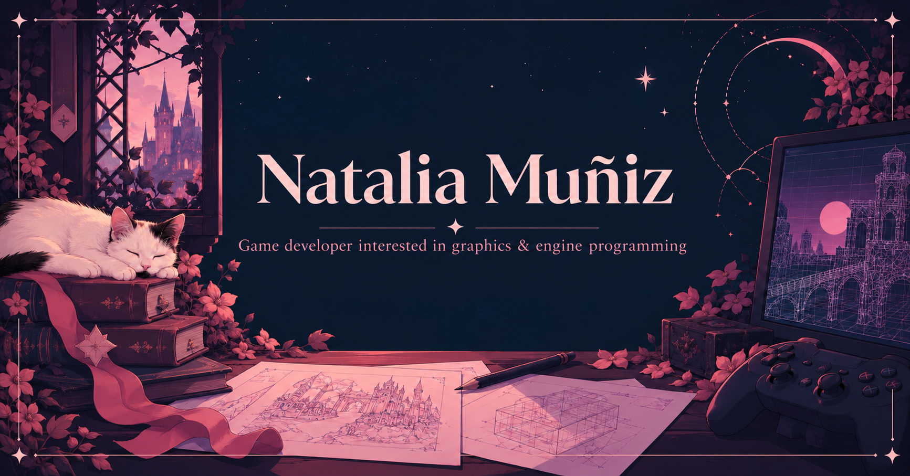

Natalia Muñiz — Game developer interested in graphics & engine programming

I'm a game developer with a particular interest in graphics programming. What I enjoy most about it is the combination of programming and creativity, working on visual features that shape how a game looks and feels.
My Work

Bound by Death
A top-down, local cooperative hack-and-slash developed with a custom C++ / DirectX 12 engine. I worked on trail and line rendering systems, collaborated on physically based rendering and image-based lighting, and implemented additional material features.
Early Projects
Games I made during my technical studies.
About Me
I'm currently completing my master's degree in Programming for AAA Video Games, where I've been part of a student development team building a game using a custom engine.
My background includes studies in software engineering and video game development, as well as professional experience working as a software engineer at a consultancy.
I'm now looking for my first professional opportunity in the video game industry, particularly in graphics or engine programming.
Contact
Explore my projects on GitHub and itch.io, or connect with me on LinkedIn.